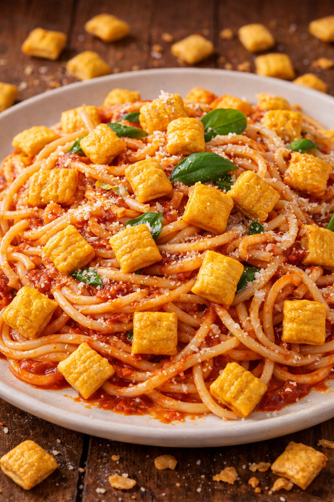

Home
Cap'n Crunch Spaghetti

Description
Ooey Gooey Spaghetti with crunchy flavor bursts of Cap'n Crunch cereal will make
your taste buds explode with delight!
Ingredients
-
Noodles
-
Sauce
-
Cap'n Crunch Cereal
-
Parmesan Cheese
Steps
-
Moisten the noodles and make them limp
-
Add sauce
-
Garnish with Cap'n Crunch & Cheese